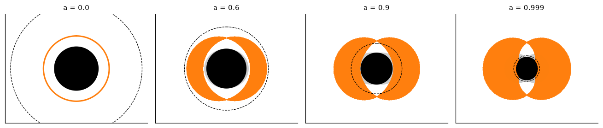
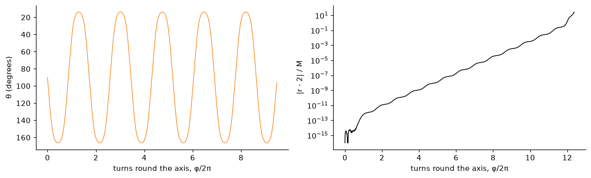
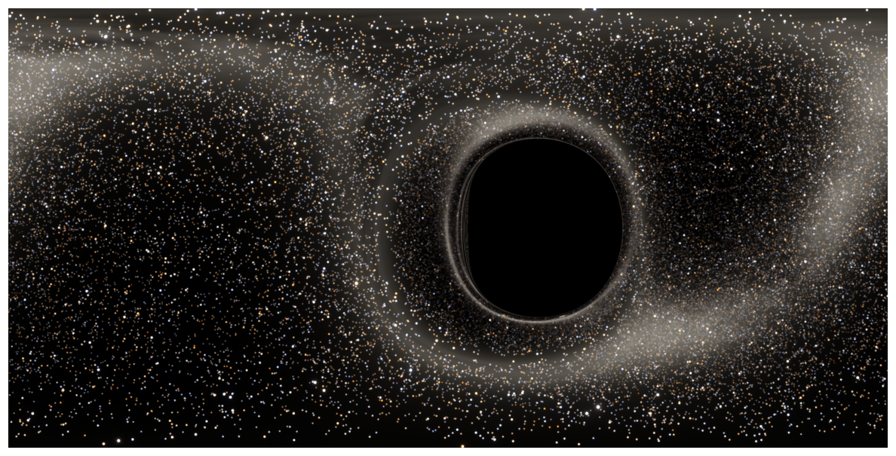

Spin, frame dragging, the Carter constant and the D-shaped shadow, with a ray tracer for a spinning hole (part 3 of 4)
What a spinning black hole does to light: the Kerr metric, horizons and the ergosphere, frame dragging and zero-angular-momentum observers, the three conserved quantities of a light ray including Carter’s constant, the Hamiltonian ray equations used by DNGR, spherical photon orbits, Bardeen’s shadow, and the effect of the camera’s motion, all checked numerically.
Gargantua spins. In the story it spins within a whisker of the maximum, which is what makes an hour on Miller’s planet cost seven years on Earth. Spin breaks the spherical symmetry that made part 2 so economical: a ray no longer stays in one plane, and no single function of one angle describes the image. This post sets up the equations that DNGR, the code behind Interstellar, actually integrated, builds a ray tracer from them, and checks it against the few results for a spinning hole that are known exactly.
Show code
import sys, math, time, warningsfrom pathlib import Pathwarnings.filterwarnings("ignore")ROOT = Path.cwd().resolve().parents[1] /"gargantua"sys.path.insert(0, str(ROOT))import numpy as npimport matplotlib.pyplot as pltfrom blackhole import kerr, render as R, sky as SK, disk as D, schwarzschild as Sfrom blackhole.colour import tonemap, bloomplt.rcParams.update({"figure.dpi": 110, "axes.spines.top": False, "axes.spines.right": False})def show(ax, img, title=None): ax.imshow(np.clip(img, 0, 1), interpolation="lanczos") ax.set_axis_off()if title: ax.set_title(title, fontsize=10)
The Kerr metric
Roy Kerr found the spacetime of a spinning black hole in 1963. In Boyer–Lindquist coordinates \((t, r, \theta, \phi)\), with \(G = c = M = 1\) and spin parameter \(a = J/M\) (the angular momentum per unit mass, \(0 \le a < 1\)), it can be written, as in the DNGR paper, in a form that exposes its meaning:
\(\alpha\) is the lapse: how fast a local clock ticks relative to \(t\). It vanishes at the horizon.
\(\varpi\) is the circumferential radius: a ring at fixed \(r, \theta\) has circumference \(2\pi\varpi\).
\(\omega\) is the frame-dragging angular velocity. The combination \(d\phi - \omega\,dt\) means that “not rotating” near the hole means rotating at \(d\phi/dt = \omega\) relative to the distant stars.
Setting \(a = 0\) gives \(\omega = 0\), \(\rho = \varpi/\sin\theta = r\), \(\alpha^2 = 1 - 2/r\), and the Schwarzschild metric of parts 1 and 2.
The horizon is where \(\Delta = 0\), at \(r_+ = 1 + \sqrt{1 - a^2}\), which shrinks from \(2\) to \(1\) as the spin rises to its maximum. Outside it is the ergosphere, where \(g_{tt} > 0\), out to \(r = 1 + \sqrt{1 - a^2\cos^2\theta}\). Inside the ergosphere frame dragging is so strong that nothing can stay still relative to the distant stars. Everything there is swept round with the hole.
Show code
fig, axs = plt.subplots(1, 4, figsize=(12, 3.4))th = np.linspace(0, 2* np.pi, 400)for ax, a inzip(axs, [0.0, 0.6, 0.9, 0.999]): rp = kerr.horizon(a) rerg =1+ np.sqrt(1- a**2* np.cos(th) **2) ax.fill(rerg * np.sin(th), rerg * np.cos(th), color="0.8")if a >0: r1, r2 = kerr.photon_orbit_radii(a)else: r1 = r2 =3.0# photon region: where spherical orbits exist at this theta rr = np.linspace(r1, r2, 300)if a >0: b, q = kerr.spherical_photon_constants(rr, a)for t in np.linspace(0, np.pi, 181):if a >0: ok = q + a * a * np.cos(t) **2- b * b / np.tan(t +1e-12) **2>=0 ax.plot(rr[ok] * np.sin(t), rr[ok] * np.cos(t), ".", color="C1", ms=0.6) ax.plot(-rr[ok] * np.sin(t), rr[ok] * np.cos(t), ".", color="C1", ms=0.6)if a ==0: ax.plot(3* np.sin(th), 3* np.cos(th), color="C1", lw=2) ax.fill(rp * np.sin(th), rp * np.cos(th), color="k") ri = D.isco(a) ax.plot(ri * np.sin(th), ri * np.cos(th), "k--", lw=0.8) ax.set_aspect("equal") ax.set_xlim(-6.5, 6.5) ax.set_ylim(-5, 5) ax.set_title(f"a = {a}", fontsize=10) ax.set_xticks([]) ax.set_yticks([])plt.tight_layout()plt.show()print(f"{'a':>6}{'horizon':>8}{'prograde photon':>16}{'retrograde photon':>18}{'ISCO':>7}")for a in [0.0, 0.6, 0.9, 0.999]: r1, r2 = kerr.photon_orbit_radii(a) if a >0else (3.0, 3.0)print(f"{a:6g}{kerr.horizon(a):8.4f}{r1:16.4f}{r2:18.4f}{D.isco(a):7.4f}")

Figure 1: Cross-sections through Kerr holes of increasing spin, the spin axis vertical (Boyer-Lindquist r and θ drawn as if they were polar coordinates). Black: horizon. Grey: the ergosphere. Orange: the region swept by spherical photon orbits, between the prograde and retrograde circular photon orbits in the equator. Dashed: the innermost stable circular orbit (ISCO) for matter. As the spin rises, prograde orbits move in towards the horizon.
Which observer should hold the camera? Near a spinning hole there are no static observers inside the ergosphere, and outside it they are not the natural choice either. The natural one is the zero-angular-momentum observer (ZAMO), the “fiducial observer” or FIDO of the DNGR paper. It moves on the line \(\phi = \omega t + \text{const}\), carried round by frame dragging but with no angular momentum of its own. Its orthonormal basis vectors point along the coordinate lines:
Any real camera moves relative to the local ZAMO with some velocity \(\beta\), and its view is the ZAMO’s view, aberrated as in part 2.
Three constants for a light ray
In Schwarzschild spacetime a ray has energy \(E\) and angular momentum \(L\), and spherical symmetry supplies the rest. The Kerr metric is independent of \(t\) and \(\phi\), which again gives \(E = -p_t\) and \(L_z = p_\phi\). But it is only axially symmetric, so total angular momentum is no longer conserved, and two constants are not enough to determine a path in three dimensions.
In 1968 Brandon Carter found a third. Write the Hamilton–Jacobi equation for null geodesics,
and try \(S = -Et + L_z\phi + S_r(r) + S_\theta(\theta)\). With \(E = 1\) (so that \(b = L_z/E\) is the axial impact parameter), the inverse Kerr metric turns the equation into
The left side depends only on \(r\) and the right side only on \(\theta\), so both equal a constant, \(-q\). That separability is the hidden symmetry of the Kerr metric, and \(q\) is the Carter constant (divided by \(E^2\)). The radial and polar motions then decouple:
A ray can only be where \(R \ge 0\) and \(\Theta \ge 0\). A ray that crosses the equator has \(q \ge 0\), and \(q = 0\) means a ray confined to the equatorial plane.
The ray equations
Integrating \(p_r = \pm\sqrt R/\Delta\) directly runs into trouble at every turning point, where the square root changes sign. DNGR instead integrated Hamilton’s equations for the super-Hamiltonian\(H = \tfrac12 g^{\mu\nu}p_\mu p_\nu\), which handle turning points smoothly. With \(p_t = -1\) and \(p_\phi = b\) fixed,
and Hamilton’s equations, \(\dot x = \partial H/\partial p\) and \(\dot p = -\partial H/\partial x\), give the five equations that are the heart of the renderer:
These are equations (A.15) of the DNGR paper. The combination \((R + \Delta\Theta)/\Delta = P^2/\Delta - (b-a)^2 - \cos^2\theta\,(b^2/\sin^2\theta - a^2)\) does not involve \(q\) at all, so \(q\) is never used during integration. Its conservation is therefore a genuine test of the integrator. Working out the derivatives,
which for \(a = 0\) is the familiar \(b/(r^2\sin^2\theta)\).
Initial conditions from a pixel
The camera supplies a direction. A pixel’s unit vector \(\mathbf N\) (from camera to sky) in the camera frame becomes, for the arriving photon, a propagation direction \(\mathbf n = -\mathbf N\). Aberration converts it to the ZAMO frame, giving \(\mathbf n_F\). The photon’s energy measured by the ZAMO is then
These satisfy \(H = 0\) automatically. The ray is then integrated backwards, \(\zeta \to -\infty\), until it escapes, reaches the horizon, or hits the disk.
The integrator
The tracer (kerr.trace) is a Dormand–Prince 5(4) Runge–Kutta integrator with adaptive steps. It is compiled with numba and runs one ray per thread. Steps are small where the ray bends sharply near the hole and long far away. A ray that crosses the equator inside the disk’s radius is stopped there, the crossing located to \(10^{-10}\) in \(\theta\) by secant iteration (part 4). Here it traces the rays of one image of a fast-spinning hole and checks the constants it is not told about:
Show code
a =0.999cam = kerr.Camera(6.03, math.pi /2, a, beta="orbit", fov=90)N = cam.directions(480, 480)Y0, B, E_cam = cam.initial_conditions(N)q0 = kerr.carter_q(Y0[:, 0], Y0[:, 1], Y0[:, 4], B, a)H0 = kerr.hamiltonian(Y0[:, 0], Y0[:, 1], Y0[:, 3], Y0[:, 4], B, a)t0 = time.time()Y, oc, ns = kerr.trace(Y0, B, a, tol=1e-9)secs = time.time() - t0q1 = kerr.carter_q(Y[:, 0], Y[:, 1], Y[:, 4], B, a)H1 = kerr.hamiltonian(Y[:, 0], Y[:, 1], Y[:, 3], Y[:, 4], B, a)esc = oc == kerr.ESCAPEDdq = np.abs(q1 - q0)[esc] / np.maximum(1, np.abs(q0[esc]))print(f"{len(Y)} rays in {secs:.2f} s: {esc.sum()} escaped, {(oc == kerr.CAPTURED).sum()} captured")print(f"steps per ray: median {np.median(ns):.0f}, max {ns.max()}")print(f"|H| at the camera: max {np.abs(H0).max():.1e}")print(f"|H| at the end: max {np.abs(H1[esc]).max():.1e}")print(f"Carter constant drift (relative): median {np.median(dq):.1e}, max {dq.max():.1e}")dq_max = dq.max()
230400 rays in 7.01 s: 153574 escaped, 76826 captured
steps per ray: median 154, max 2581
|H| at the camera: max 9.8e-16
|H| at the end: max 4.4e-08
Carter constant drift (relative): median 1.8e-10, max 3.1e-08
The Carter constant, which the equations never use, is conserved to 3e-08 or better along every ray, through every turning point.
Photon orbits
A Schwarzschild hole has one photon sphere. A Kerr hole has a whole shell of spherical photon orbits: rays that stay at constant \(r\) while oscillating in \(\theta\) and winding round the axis. They exist where \(R(r) = 0\) and \(R'(r) = 0\) at once, which fixes the two constants as functions of the radius (Bardeen 1973; equations (A.5) of DNGR):
These orbits are all unstable. A ray launched exactly onto one stays there only as long as rounding error allows, and then peels off exponentially. The tracer shows both behaviours:
Show code
a =0.999r_o =2.0b_o, q_o = kerr.spherical_photon_constants(r_o, a)path, outcome = kerr.trace_path([r_o, math.pi /2, 0.0, 0.0, math.sqrt(q_o)], b_o, a, r_esc=30, tol=1e-12, n=200000, sgn=1.0)fig, ax = plt.subplots(1, 2, figsize=(11, 3.4))turns = path[:, 2] / (2* np.pi)dev = np.abs(path[:, 0] - r_o)k = np.argmax(dev >1e-3)ax[0].plot(turns[:k], np.degrees(path[:k, 1]), "C1", lw=0.8)ax[0].set_xlabel("turns round the axis, φ/2π")ax[0].set_ylabel("θ (degrees)")ax[0].invert_yaxis()ax[1].semilogy(turns, np.maximum(dev, 1e-16), "k", lw=1)ax[1].set_xlabel("turns round the axis, φ/2π")ax[1].set_ylabel("|r - 2| / M")plt.tight_layout()plt.show()th_range = np.degrees([path[:k, 1].min(), path[:k, 1].max()])# growth rate of the deviation, fitted between 1e-11 and 1e-2fit = (dev >1e-11) & (dev <1e-2)growth =10** np.polyfit(turns[fit], np.log10(dev[fit]), 1)[0]print(f"b = {b_o:.4f}, q = {q_o:.4f}; latitude range {th_range[0]:.1f}° to {th_range[1]:.1f}°; "f"{turns[k]:.1f} turns before |r - 2| > 1e-3")print(f"the deviation grows by a factor of {growth:.1f} per turn")

Figure 2: A spherical photon orbit at r = 2 M around a hole with a = 0.999, launched from the equator with the b and q of the formula above. Left: its path on the sphere (θ against φ, unrolled) is a steady oscillation between two latitudes while it winds round the axis. Right: the radius starts at 2 to within rounding error, and the instability amplifies that error exponentially, by a constant factor per turn, until the ray leaves the orbit and escapes.
b = 1.0070, q = 15.9680; latitude range 13.8° to 166.2°; 9.5 turns before |r - 2| > 1e-3
the deviation grows by a factor of 11.9 per turn
The deviation from the orbit grows by a factor of about 12 with every turn round the axis. This is the Kerr version of the winding rays of part 1, and the DNGR paper pictures one such orbit (their Figure 11). Rays that pass close to this shell are what pile up the multiple images near the shadow’s edge.
The shadow
The edge of the shadow is made of rays that, followed backwards, approach a spherical photon orbit asymptotically. For a distant observer at inclination \(\theta_o\) from the spin axis, each orbit radius \(r\) gives two points on the observer’s sky (Bardeen 1973):
\[
x = -\frac{b(r)}{\sin\theta_o}, \qquad
y = \pm\sqrt{q(r) + a^2\cos^2\theta_o - b(r)^2\cot^2\theta_o},
\]
in units of \(M\). Here \(x\) runs in the direction of the hole’s rotation and \(y\) along the projected spin axis. This curve is an exact, independent result, so it is the natural test of the ray tracer. The test is to place a camera very far away (\(r = 10^5 M\)) and bisect, along rays out from the shadow’s centre, for the boundary between captured and escaping rays:
Show code
def traced_edge(a, theta_o, n_ang=120, r_cam=1e5): cam = kerr.Camera(r_cam, theta_o, a) xb, yb = kerr.shadow_edge(a, theta_o) cx =0.5* (xb.max() + xb.min()) ang = np.linspace(0, 2* np.pi, n_ang, endpoint=False) lo, hi = np.full(n_ang, 0.5), np.full(n_ang, 12.0)for _ inrange(40): mid =0.5* (lo + hi) X, Yy = cx + mid * np.cos(ang), mid * np.sin(ang) Nv = np.stack([np.ones(n_ang), X / r_cam, Yy / r_cam], -1) Nv /= np.linalg.norm(Nv, axis=1, keepdims=True) Y0, B, _ = cam.initial_conditions(Nv) _, o, _ = kerr.trace(Y0, B, a, r_esc=2* r_cam, tol=1e-11) cap = o == kerr.CAPTURED lo, hi = np.where(cap, mid, lo), np.where(cap, hi, mid)return cx + lo * np.cos(ang), lo * np.sin(ang), cxworst =0.0for a, inc in [(0.999, 90), (0.999, 60), (0.6, 86.56)]: xt, yt, cx = traced_edge(a, math.radians(inc)) xb, yb = kerr.shadow_edge(a, math.radians(inc), n=4000)# distance from each traced point to the nearest segment of Bardeen's curve P0 = np.c_[xb[:-1], yb[:-1]] dP = np.c_[np.diff(xb), np.diff(yb)] pts = np.c_[xt, yt] tpar = np.clip(((pts[:, None, :] - P0[None]) * dP[None]).sum(-1) / (dP **2).sum(-1)[None], 0, 1) dmin = np.linalg.norm(pts[:, None, :] - (P0[None] + tpar[..., None] * dP[None]), axis=-1).min(1) worst =max(worst, dmin.max())print(f"a = {a:5g}, inclination {inc:5.2f}°: largest distance from Bardeen's curve {dmin.max():.1e} M")
a = 0.999, inclination 90.00°: largest distance from Bardeen's curve 7.0e-05 M
a = 0.999, inclination 60.00°: largest distance from Bardeen's curve 6.7e-05 M
a = 0.6, inclination 86.56°: largest distance from Bardeen's curve 6.3e-05 M
The traced shadow lies on Bardeen’s curve to within 7e-05 \(M\) at every inclination tested. That is the size of error expected from putting the camera at \(10^5 M\) rather than at infinity: corrections of relative order \(M/r\) applied to a shadow about \(5\,M\) across.
Figure 3: Shadows of black holes of increasing spin, seen from the equatorial plane (left) and from 60° (right). The hole rotates so that its left side (x < 0) moves towards the viewer. The shadow is pushed sideways and flattened on the approaching side, where prograde photons can orbit closer to the hole, and bulges on the receding side. The grey circle is the Schwarzschild shadow, radius 3√3 M.
This flattened edge is why Interstellar did not show Gargantua at its story spin. Christopher Nolan and Paul Franklin judged that the flattened shadow, with the multiple disk images along it and an off-centre disk, would confuse a mass audience. For the pictures they turned the spin down to \(a = 0.6\), where the shadow is still almost round (part 4 and the main post).
The camera’s motion matters as much as the spin
Close to a fast-spinning hole, the choice of camera changes the picture more than anything else. The DNGR paper makes this point with a checkerboard sky seen from \(r = 2.6\,M\) around a hole with \(a = 0.999\), inside the photon region and just outside the ergosphere, by three cameras at the same point:
one on a prograde circular orbit;
one at rest relative to the local ZAMO;
one static relative to the distant stars, which takes a rocket working very hard against frame dragging.
Figure 4: The whole sky seen from r = 2.6 M around a hole with a = 0.999, for three cameras at the same point: (top) on a prograde circular geodesic orbit; (middle) a ZAMO; (bottom) static relative to the distant stars. The hole’s centre is in the middle of each panorama. The rays and the multiplicity of images are the same in all three; only aberration differs. Compare Figure 12 of James et al. (2015).
ZAMO relative to orbiting camera: -0.546c; static relative to orbiting camera: -0.813c
The speeds match the DNGR paper’s figures exactly: relative to the orbiting camera, the ZAMO moves at 0.546c and the static camera at 0.813c (the paper gives 0.546c and 0.813c). The static camera, racing backwards against the hole’s rotation, sees the shadow swell to cover more than half its sky. The orbiting camera sees it shrink. Yet the pattern of images, how many copies of each piece of sky appear and where the critical curves fall, is the same for all three. The caustics belong to the light cone at that point, not to whoever is looking.
Stars round a spinning hole
The DNGR paper’s first image of a spinning hole (their Figure 4) is a star field seen from a camera in a circular equatorial orbit at \(r_c = 6.03\,M\) around a hole with \(a = 0.999\). Here is the same configuration, with this renderer’s synthetic sky: a mip-mapped Milky Way and 30,000 point stars lensed by the triangle method of part 2.
Show code
a, r603 =0.999, 6.03milky = SK.Sky(SK.milky_way(2048))stars = SK.star_catalogue()ss =2tr = R.trace_image(r603, 90, a, 1200, 600, 0, ss=ss, beta="orbit", disk=False, projection="panorama")img, lin = R.compose(tr, a, ss, sky=milky, stars=stars, star_gain=1.0, exposure=2.0)fig, ax = plt.subplots(figsize=(11, 5.6))show(ax, img)plt.tight_layout()plt.savefig("thumbnail.png", dpi=70, bbox_inches="tight", pad_inches=0)plt.show()print(f"{tr['outcome'].size} rays traced in {float(tr['seconds']):.1f} s; median {np.median(tr['steps']):.0f} steps per ray")

Figure 5: The whole sky from a camera in a circular equatorial orbit at r = 6.03 M around a hole with a = 0.999 (equirectangular panorama, hole at the centre, direction of motion to the right). The shadow is flattened on its left, the side where the hole’s rotation carries light towards the camera. Around it the Milky Way and the stars are repeated in nested, distorted copies between the critical curves.
2880000 rays traced in 17.5 s; median 107 steps per ray
With a spinning hole there is nothing left to tabulate, so every pixel is a full geodesic integration. On a laptop with numba that takes seconds for an image of a few million rays. DNGR rendered 23-million-pixel IMAX frames with ray bundles, at 30 minutes to several hours per frame on 10 cores. The last ingredient is the light source Interstellar is remembered for, the accretion disk. That is part 4.
References
Kerr, R. P. (1963). Gravitational field of a spinning mass as an example of algebraically special metrics. Physical Review Letters 11, 237–238.
Boyer, R. H. and Lindquist, R. W. (1967). Maximal analytic extension of the Kerr metric. Journal of Mathematical Physics 8, 265–281.
Carter, B. (1968). Global structure of the Kerr family of gravitational fields. Physical Review 174, 1559–1571.
Bardeen, J. M., Press, W. H. and Teukolsky, S. A. (1972). Rotating black holes: locally nonrotating frames, energy extraction, and scalar synchrotron radiation. Astrophysical Journal 178, 347–369.
Bardeen, J. M. (1973). Timelike and null geodesics in the Kerr metric. In Black Holes (Les Houches 1972), eds. C. DeWitt and B. S. DeWitt, 215–239. Gordon and Breach.
Teo, E. (2003). Spherical photon orbits around a Kerr black hole. General Relativity and Gravitation 35, 1909–1926.
James, O., von Tunzelmann, E., Franklin, P. and Thorne, K. S. (2015). Gravitational lensing by spinning black holes in astrophysics, and in the movie Interstellar. Classical and Quantum Gravity 32, 065001. arXiv:1502.03808.
Thorne, K. S. (2014). The Science of Interstellar. W. W. Norton.